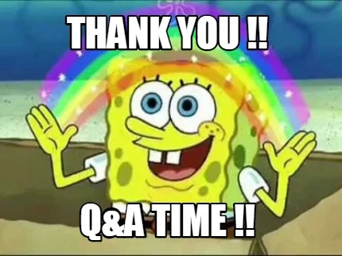

## Asynchronous programing or: Do this, then that.
### Credit Ⓒ Payton Swick <small>Original slide</small> <small>https://sirbrillig.github.io/js-promises-slides/</small>
### JavaScript is <em>single-threaded</em> That mean it only executes one thing at a time. <p class="fragment"><em>But wait</em> 🤔 how do websites seemingly do multiple task in parallel? </p>
### The Event Loop
JavaScript executes statements in the current block ("call stack") until they are all complete. <p class="fragment">Then it loops back around and checks for new statements in the <em>queue</em>.</p>
### The Event Queue Some things that can add to the queue: - user events (clicks, typing, etc.) - browser events (loading, leaving, etc.) - network events - data events - the `setTimeout()` function
### Callbacks
We can add a block of code to the queue that will be executed when an event occurs. This is a callback function. <pre><code data-trim data-noescape> document.addEventListener('DOMContentLoaded', function() { console.log('The page is ready!'); }); </code></pre> <pre><code data-trim data-noescape> setTimeout(function() { console.log('One second has passed.'); }, 1000); </code></pre>
But what if you want to chain multiple callbacks together? <pre><code data-trim data-noescape class="JavaScript"> fillKettle(); // wait until it's finished, then... boilWater(); // wait until it's finished, then... addLeaves('green'); // wait until it's finished, then... steepTea('1 minute'); </code></pre>
Let's try using callbacks. <pre><code data-trim data-noescape class="JavaScript"> fillKettle(function() { boilWater(function() { addLeaves('green', function() { steepTea('1 minute'); }); }); }); </code></pre>
<strong class="scare">Callback Hell!</strong> 😱 <pre><code data-trim class="JavaScript"> fillKettle(function() { boilWater(function() { addLeaves('green', function() { steepTea('1 minute', function() { pourTea(function() { serveTea(function() { drinkTea(); }); }); }); }); }); }); </code></pre>
### Promises
Promises are the solution to callback hell.
> The Promise object represents the eventual completion (or failure) of an asynchronous operation, and its resulting value. <small>https://developer.mozilla.org/en-US/docs/Web/JavaScript/Reference/Global_Objects/Promise</small>
A Promise is in one of these states: - _pending_: initial state, neither fulfilled nor rejected. - _fulfilled_: meaning that the operation completed successfully. - _rejected_: meaning that the operation failed.
Each `Promise` object has a `then()` method that accepts a callback. The callback will be called when the operation is complete. <div class="fragment fade-in"> <div class="fragment fade-in"> <pre><code data-trim data-noescape class="JavaScript"> doThis().then(doThat); </code></pre> </div> <div class="fragment fade-in"> <pre><code data-trim data-noescape class="JavaScript"> doThis().then(doThat).then(doSomethingElse); </code></pre> </div> </div> <!-- <div class="fragment"> `then()` always returns a Promise, so we can chain them together. </div> -->
It's easier to read if we put them vertically: <pre><code data-trim data-noescape class="JavaScript"> doThis() .then(doThat) .then(doSomethingElse); </code></pre>
Remember this? <pre><code data-trim class="JavaScript"> fillKettle(function() { boilWater(function() { addLeaves('green', function() { steepTea('1 minute', function() { pourTea(function() { serveTea(function() { drinkTea(); }); }); }); }); }); }); </code></pre>
It doesn't matter how many callbacks we need, there's no nesting. <pre><code data-trim data-noescape class="JavaScript"> fillKettle() .then(boilWater) .then(() => addLeaves('green')) .then(() => steepTea('1 minute')) .then(pourTea) .then(serveTea) .then(drinkTea); </code></pre>
`then()` always returns a `Promise` object. If the callback does not return a Promise, its return value is converted into a Promise automatically.
### Creating Promises `Promise` is a top-level constructor function. <pre><code data-trim data-noescape class="JavaScript"> const myPromise = new Promise(); </code></pre>
The Promise constructor function takes one argument, which is a function to run immediately. It should do something asynchronous. When it's done, it should call `resolve()` or `reject()`, which are arguments to the function. <pre><code data-trim data-noescape class="JavaScript"> const myPromise = new Promise(function (resolve, reject) { setTimeout(function() { resolve(); }, 1000) // Takes 1 second to resolve }); </code></pre>
Any `then()` callbacks will be called when `resolve()` is called inside the Promise function. <pre><code data-trim data-noescape class="JavaScript"> const myPromise = new Promise(function (resolve, reject) { setTimeout(function() { resolve(); }, 1000); }); myPromise.then(() => console.log('all done!')); console.log('starting operation...'); </code></pre> <pre class="fragment"><code data-trim data-noescape class="markdown"> starting operation... </code></pre> <pre class="fragment"><code data-trim data-noescape class="markdown"> all done! </code></pre>
If `resolve()` is passed an argument, that argument is provided to the callback in `then()`. <pre><code data-trim data-noescape class="JavaScript"> const myPromise = new Promise(function (resolve, reject) { setTimeout(function() { resolve('Hong Shui Oolong'); }, 1000) // Takes 1 second to resolve }); myPromise.then(tea => console.log(`Today's tea is ${tea}`)); </code></pre> <pre><code data-trim data-noescape class="markdown"> Today's tea is Hong Shui Oolong </code></pre>
### fetch
`fetch()` is a Web API function in JavaScript that makes HTTP requests. It returns a `Promise` that resolves when the request is complete.
Using `fetch()` to get JSON data from a web server: <pre><code data-trim data-noescape class="JavaScript"> fetch('https://jsonplaceholder.typicode.com/todos/1') .then(response => response.json()) .then(json => console.log(json)) </code></pre> <pre class="fragment"><code data-trim data-noescape class="json"> { "userId": 1, "id": 1, "title": "delectus aut autem", "completed": false } </code></pre>
### Handling Errors
If a Promise fails, its `reject()` function is called instead of `resolve()`. This will cause it to _skip_ all `then()` callbacks and instead call the nearest `catch()`.
### Catch Every Promise object also has a `catch()` method, which works just like `then()`. It takes one callback argument which is called if the Promise fails. <pre><code data-trim data-noescape class="JavaScript"> boilWater() .catch(() => console.error('There was a problem making tea.')) </code></pre>
`catch()` will be called for any unhandled rejection in any Promise in the chain. The following `catch()` is called if any of the steps fails (and the chain will stop): <pre><code data-trim data-noescape class="JavaScript"> fillKettle() .then(boilWater) .then(() => addLeaves('green')) .then(() => steepTea('1 minute')) .catch(() => console.error('There was a problem making tea.')) </code></pre>
### Finally If you need something to run no matter what, you can use `finally()`. <pre><code data-trim data-noescape class="JavaScript"> let isMakingTea = true; boilWater() .then(steepTea) .catch(() => console.error('Failed to make tea.')) .finally(() => { isMakingTea = false; }); </code></pre>
### Multiple Promises
When you want to wait for several Promises to complete, you can use `Promise.all()`. It accepts an array of Promises and returns a new Promise that will complete when all the others are complete.
`Promise.all()` is useful to run things in "parallel"*, like loading resources for a game. <small>*Async but still serial.</small> <pre><code data-trim data-noescape class="JavaScript"> const imageLoader = loadImages(); const soundLoader = loadSounds(); const movieLoader = loadMovies(); const loader = Promise.all([ imageLoader, soundLoader, movieLoader, ]); loader.then(startGame); </code></pre>
### Await, there's more!
A new addition to the language is the `await` keyword. This allows async functions to be written as if they were synchronous.
Remember this? <pre><code data-trim data-noescape class="JavaScript"> fetch('https://jsonplaceholder.typicode.com/todos/1') .then(response => response.json()) .then(json => console.log(json)) </code></pre> Using await: <pre><code data-trim data-noescape class="JavaScript"> const response = await fetch('https://jsonplaceholder.typicode.com/todos/1') const json = await response.json(); console.log(json); </code></pre>
> The await expression causes async function execution to pause until a Promise is resolved... and to resume execution of the async function after fulfillment. When resumed, the value of the await expression is that of the fulfilled Promise. <small>https://developer.mozilla.org/en-US/docs/Web/JavaScript/Reference/Operators/await</small>
However, you cannot use `await` outside of a function, and that function _must_ be marked `async`. This guarantees that the function will always return a Promise. <pre><code data-trim data-noescape class="JavaScript"> async function getDataFromServer() { const response = await fetch('https://jsonplaceholder.typicode.com/todos/1') const json = await response.json(); return json; } async function main() { console.log(await getDataFromServer()); } main(); </code></pre>
Here's that tea example: <pre><code data-trim data-noescape class="JavaScript"> function main() { boilWater() .then(() => addLeaves('green')) .then(() => steepTea('1 minute')) .then(drinkTea); } main(); </code></pre> And with await: <pre><code data-trim data-noescape class="JavaScript"> async function main() { await boilWater(); await addLeaves('green'); await steepTea('1 minute')); drinkTea(); } main(); </code></pre>
### Handling errors with await When using `await`, if the Promise is rejected, the await expression _throws_ the rejected value.
Thrown Promise rejections bubble up as normal. <pre><code data-trim data-noescape class="JavaScript"> async function main() { try { await fillKettle(); await boilWater(); await addLeaves('green'); await steepTea('1 minute')); drinkTea(); } catch (error) { console.error('There was a problem making tea.'); } } main(); </code></pre>
### Top Level Await
"Top Level Await" abvailable since node 14. You can `await` outside of an `async` function. <small>https://github.com/tc39/proposal-top-level-await</small> <small>Or you can do this in <a href="https://developers.google.com/web/updates/2017/08/devtools-release-notes#await">Chrome Devtools</a>.</small>
### And that's all 😃
